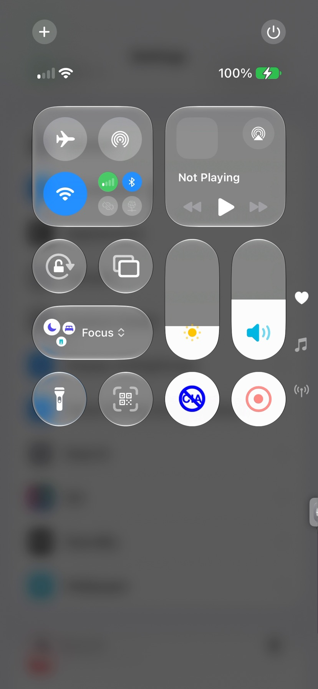
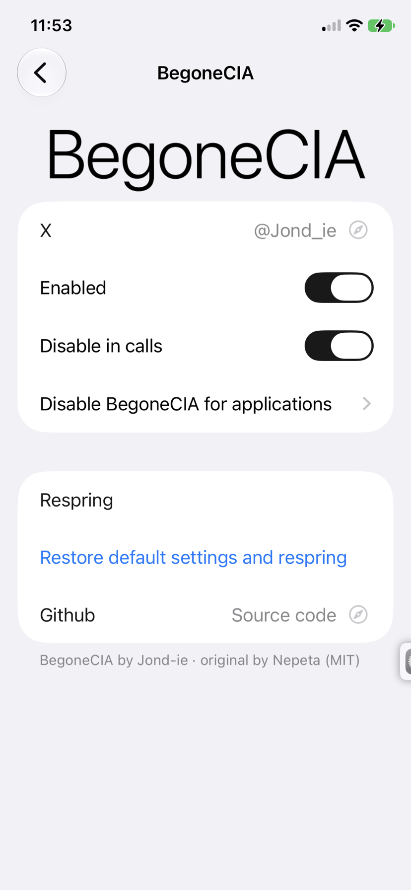
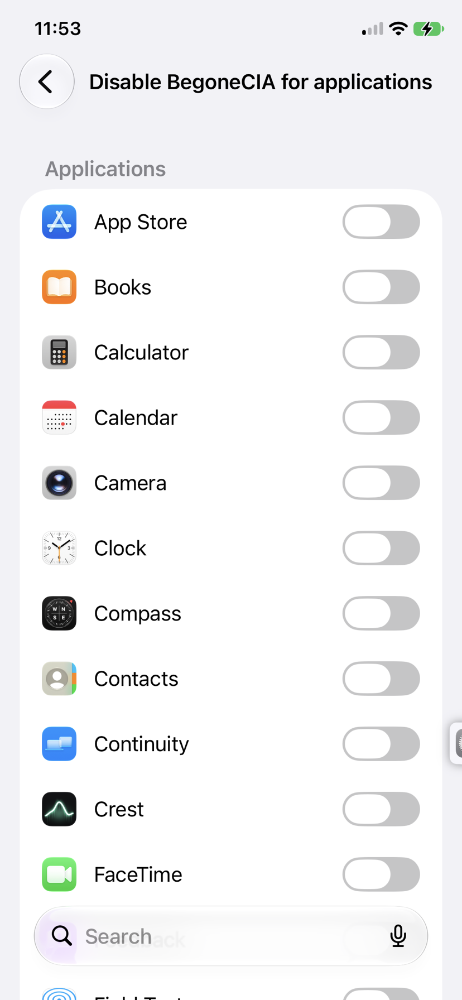

One Control Center button that cuts off the camera, mic and location for every app.
Apps don't get an error, they just get nothing. It steps aside during calls and in apps you pick.
Add the repo, search BegoneCIA, then add its button in Settings → Control Center. iOS 15 to 27, Rootless and RootHide.
How it works
In Control Center. While it's on, every app gets silence from the mic, no camera picture and no location.
Disable in calls is on by default. During a call BegoneCIA steps aside so people can hear you, then comes back when you hang up.
Disable BegoneCIA for applications: in the apps you tick, it switches off while they're open.
Made for you if…
Screenshots



Light by design
Nothing on a timer
SpringBoard decides once, when you switch apps or tap the button, and every app follows that one setting. Nothing polls in the background.
No crashes, no nags
Apps get silence, no picture and no location instead of an error, so they keep working as if nothing was there.
Private
BegoneCIA never touches the network and keeps no logs. It's open source, so you can check.
Questions
Where are the settings on iOS 27?
Settings tweaks don't show up in the Settings app on iOS 27. Open BegoneCIA's page from the TweakSettings app instead.
Does it work with FaceTime and WhatsApp calls?
Disable in calls was tested with phone calls. FaceTime and apps like WhatsApp use the same system and should work too. If one doesn't, please tell me.
Does it make my phone secure?
It protects your camera, mic and location, but a jailbroken phone is less secure overall, and BegoneCIA doesn't change that.
What does it need?
CCSupport, PreferenceLoader, AltList and Cephei. Sileo installs them with it; if it can't find Cephei, add the Chariz repo.
More details
Tested on
| iPhone | iOS |
|---|---|
| 11 Pro | 18.6.2, 27.2.1 |
| SE (2nd gen) | 15.2, 17.5.1, 27.0.1 |
| 11 Pro Max | 16.2 (with a real phone call) |
| 8 Plus | 16.7 |
| 7 | 15.8.6 |
Something not blocked?
If an app still gets through, tell me which one and your iOS version.
Request or report